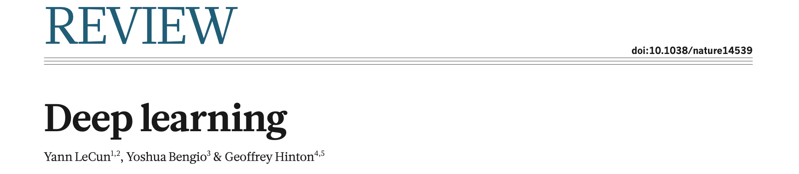
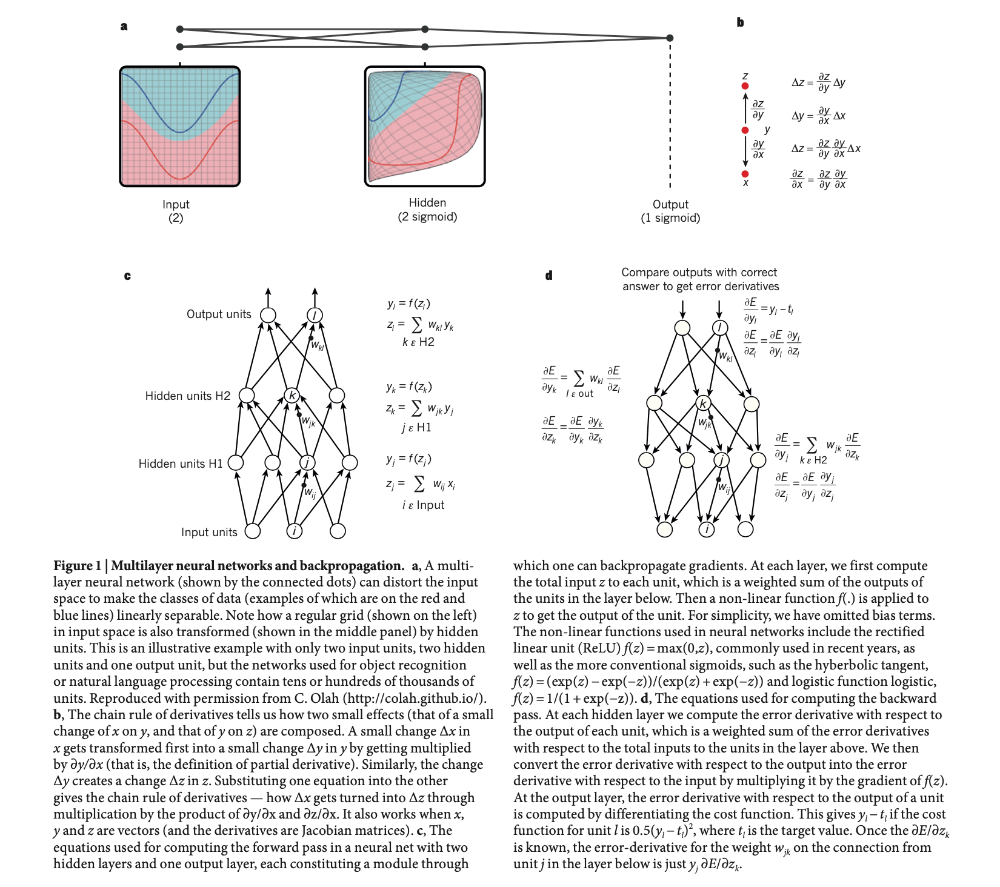
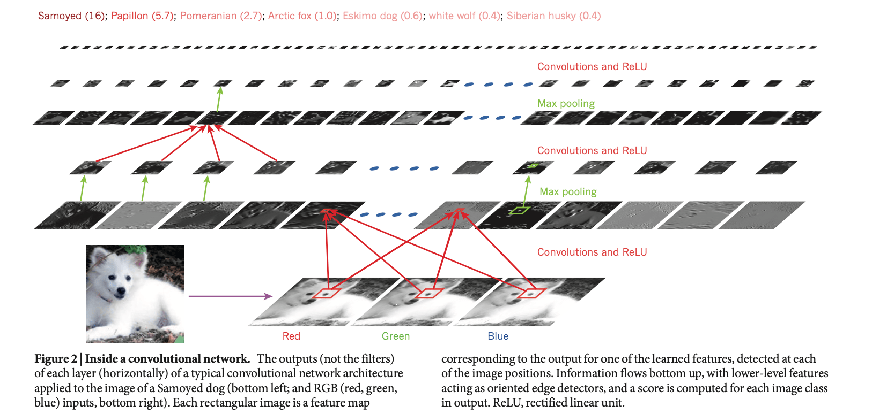
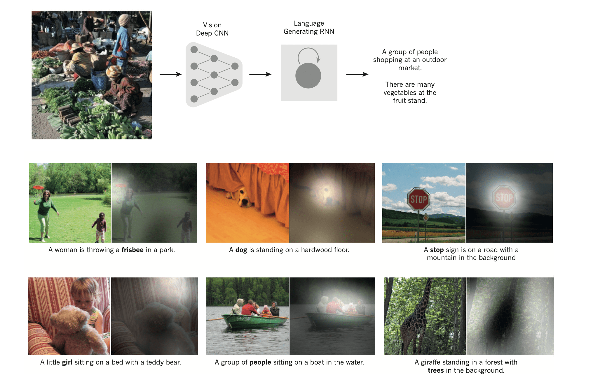
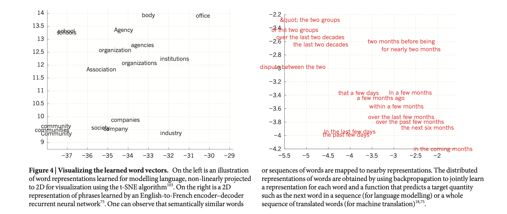
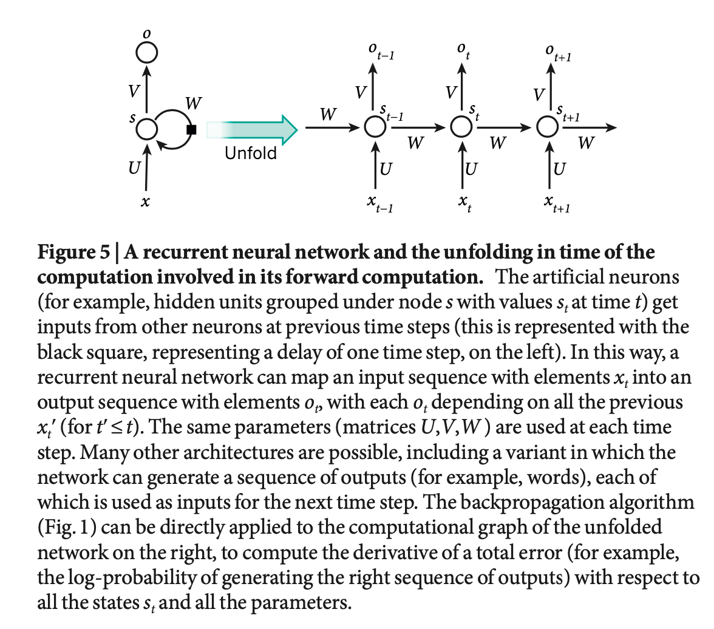

Deep learning Review
深度学习综述

-
深度学习：一个含多个处理层组成的计算模型学习多层次抽象的数据表示。
-
应用：语音识别、视觉对象识别、对象检测以及药物发现和基因组学等领域。
-
反向传播算法（backpropagation algorithm）来改变模型内部的参数，发现数据集中的复杂结构。
-
卷积神经网络（Deep convolutional nets）在处理图像、视频、语音和音频方面取得了突破性的进展。
-
循环网络（recurrent nets）在文本和语音等序列数据方面大放异彩。
-
网络搜索、内容过滤、推荐系统、识别图像中的对象、将语音转成文本、将新闻项目、帖子或产品与用户的兴趣进行匹配，这些应用广泛的应用一种叫做深度学习的技术（deep learning）。
深度学习的关键点是，特征层不是由人类工程师设计的：它们是使用通用的学习程序从数据中学习的。
The key aspect of deep learning is that these layers of features are not designed by human engineers: they are learned from data using a general-purpose learning procedure.
深度学习非常擅长发现高维数据中的复杂结构。
It has turned out to be very good at discovering intricate structures in high-dimensional data and is therefore applicable to many domains of science, business and government.
深度学习只需要很少的手工工程。
it requires very little engineering by hand.
Supervised learning
以与梯度向量相反的方向调整权重向量。
The weight vector is then adjusted in the opposite direction to the gradient vector.
负梯度向量表示最陡峭的下降方向，朝这个方向修正，输出误差平均较低。
The negative gradient vector indicates the direction of steepest descent in this landscape, taking it closer to a minimum, where the output error is low on average.
- 使用随机梯度下降 SGD
完成训练后，在测试集上进行评估。
After training, the prefermance of the system is measured on a different set of example called a test set.
- 泛化能力（generalization ability）
多层神经网络和反向传播

线性分类器或者其他浅层的网络对微小的细节不敏感，而且需要好的特征提取器才能工作得更好。

深度学习对细小的细节敏感（区分萨摩耶犬和白狼），对大的不相关的变化如背景、姿势、灯光和周围的物体不敏感。
system can implement extremely intricate functions of its inputs that are simultaneously sensitive to minute details — distinguishing Samoyeds from white wolves — and insensitive to large irrelevant variations such as the background, pose, lighting and surrounding objects.
Backpropagation to train multilayer architectures
-
使用可训练的多层网络取代手工设计的特征，通过简单的随机梯度下降来训练。
-
反向传播过程是导数链式规则（chain rule）的实际应用。
-
目前，最流行的非线性函数是整流线性单元（ReLU），$f(z)=max(z，0)$。在过去的几十年里，神经网络使用了更平滑的非线性函数，如 $tanh(z)$ 或 $sigmoid(z)$。ReLU 通常在具有许多层的网络中学习速度更快。
-
20 世纪 90 年代末，神经网络和反向传播在很大程度上被机器学习界所抛弃。那时普遍认为，梯度下降法会陷入局部最小值。
-
对于大型的网络，几乎不会陷入局部最小值，更多遇到的是鞍点（saddle points）。算法并不会卡在鞍点。
-
2006 年，deep feedforward networks 开始恢复生机。
-
预训练方法的第一个主要应用是在语音识别，使得能够以 10～20 倍的速度训练网络。
-
对于较小的数据集，无监督的预训练有助于防止过拟合。
-
卷积神经网络 “convolutional neural network (ConvNet)” 比全连接网络更容易训练和泛化。
卷积神经网络 Convolutional neural networks
- ConvNets 被设计用来处理以多个数组形式出现的数据。1-D 的信号和序列、2-D 的图像或音频谱图、3-D 的视频等。
- 特点：局部连接、参数共享、池化和使用多层。
- ConvNets 的结构如图 2，前几个阶段由卷积层和池化层组成。卷积层中的单元以特征图（feature map）的形式组织，一个特征图对应一个卷积核。
- 一个图案可能出现在图像的任何地方，可以共用一个卷积核。
- 卷积层的作用是检测前一层特征的局部连接。
池化层的作用是将语义上相似的特征合并为一个特征。
the role of the pooling layer is to merge semantically similar features into one
- Conv/ReLU/Pooling 堆叠起来，最后是全连接层。反向传播可以训练所有的卷积核参数。
高层次的特征是通过组成较低层次的特征来获得的。
higher-level features are obtained by composing lower-level ones
Image understanding with deep convolutional networks
- 自 2000 年以来，ConvNets 被成功地应用于图像中物体和区域的检测、分割和识别。
- 图像可以进行像素级别的标记。
- 类似 Mobileye 和 NVIDIA 等公司在他们即将推出的汽车视觉系统中使用基于 ConvNet 的方法。
- 尽管 ConvNets 取得了不少的成绩，但是在当时还是不被看好。直到 2012 年的 ImageNet 挑战赛，ConvNets 取得了压倒性的胜利。
- 它成功源自：GPU 的高效使用、ReLU 激活函数、Dropout 正则化方法以及数据增强技术。这带来了计算机视觉的革命。
- ConvNets 现在几乎是所有识别和检测任务的主流方法。下图将 ConvNets 和 RNN 结合的应用。

Distributed representations and language processing
PS：每一篇论文都有让人懵逼的部分。
深度学习理论表明，与不使用分布式表示的经典学习算法相比，深度网络有两个不同的指数优势。
- 学习分布式表示能够泛化到学习特征值的新组合，超出训练过程中看到的组合。
- 深度指数（exponential in the depth）
多层神经网络的隐藏层学习以一种易于预测目标输出的方式来表示网络的输入。
- one-of-N 向量
- 网络的其他层学习将输入的单词向量转换为预测下一个单词的输出单词向量，它可以用来预测词汇中任何单词作为下一个单词出现的概率。
- 词向量由学习到的特征组成，这些特征不是由专家提前确定的，而是由神经网络自动发现的。Tuesday and Wednesday 的词向量相似、Sweden and Norway 的词向量相似。
- 神经网络使用 big activity vectors、大的权重矩阵和标量非线性来进行推理。
在引入神经语言模型之前，语言统计建模的标准方法是基于对长度为 N 的短字符序列（称为 N-grams）的出现频率进行计数。
- N-grams 表示的两个词没有什么联系。
- 神经语言模型则将每个单词与实值特征的向量相关联，语义相关的单词在该向量空间中相互接近。

RNN(Recurrent neural networks)
对于涉及顺序输入的任务，如语音和文本，使用 RNNs 更好。

RNNs 每次只处理一个元素的输入序列，在它们的隐藏单元中维护着一个状态向量，隐含着序列中所有过去元素的历史信息。
- RNNs 在时间上展开（图5），就可以看作是非常深的前馈网络，其中所有层都共享相同的权重。
- 训练 RNNs 时，反向传播的梯度在每个时间增大或缩小，即梯度爆炸或梯度消失。
- 解决梯度问题的方法是使用特殊的隐藏单元的长短期记忆（LSTM）网络。
- LSTM 网络或相关形式的门控单元也被用于机器翻译中表现出色的编码和解码网络。
深度学习的未来
- 无监督学习激起了人们对深度学习的兴趣，预计从长远来看，无监督学习将变得更加重要。
- 预计未来视觉领域的大部分进展将来自于端到端训练的系统，并将 ConvNets 与使用强化学习来决定看哪里的RNNs 相结合。
- 深度学习将会在自然语言理解领域产生重大影响。
- 人工智能的重大进展将通过结合表征学习和复杂推理的系统来实现。